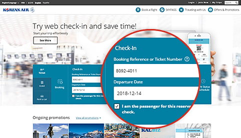
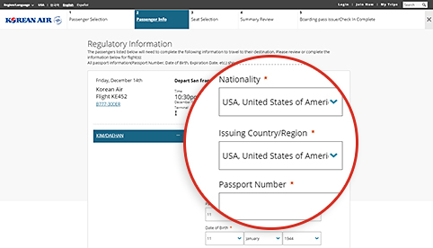
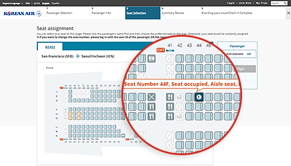
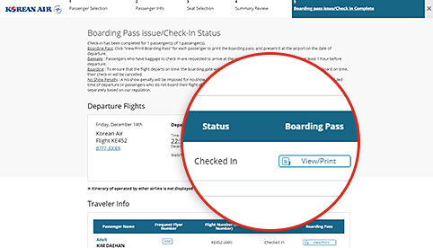

Shortened check-in procedures! Prepare for your travels conveniently!
Mobile/Web Check-in
It will save you time, allowing you to relax once you arrive at the airport.
How to use
| Eligibility | Operating routes | Check-in hours |
|---|---|---|
| Passengers traveling on Korean Air flights with a valid e-Ticket | All routes |
|
- (Reference 1) Flights to/from USA, Canada, UK, and Paris : 24 hours ~ 1 hour before departure
- To confirm the restrictions on Mobile/Web Check-in (Open in a new window)
 Be sure to give yourself ample time for security check and other procedures (complete all procedures 1 hour prior to departure for international flights and 20 minutes prior to departure for domestic flights)
Be sure to give yourself ample time for security check and other procedures (complete all procedures 1 hour prior to departure for international flights and 20 minutes prior to departure for domestic flights)
How to check in

-

Step 1 Search for a reservation
- It is easier to check in if you have entered your frequent flyer number during booking.
- If reservation is not displayed, enter either booking reference or ticket number, then input the departure date and name.
You can start web check-in by entering reservation number, departure date, and passenger name if you are not a check-in non-member in the ticket reservation area of the homepage main screen.
-

Step 2 Enter travel document information (International flights)
- Information on passport and necessary travel documents must be entered accurately. You may be unable to check in depending on the pre-screening results at the departure/arrival city if you do not enter valid information.
- The Mobile Check-in option allows you to easily enter your passport information using the passport scanning function.
Passport information such as nationality, passport issuing country / region, passport number, etc. can be entered in the second stage passenger information input screen at the time of Web check-in.
-

Step 3 Seat assignment
- Select preferable seat.
- Login with your ID (or password for non-member) if you wish to change your seat number. (However, SKYPASS data must be saved before login.)
Web Check-In Step 3 You can check the information of each seat, such as seat number, location, and seat characteristics, and select the desired seat from the seat assignment screen.
-

Step 4 Complete check in
- Click “View/Print Boarding Pass” for each passenger to print the boarding pass.
- You can reissue your boarding pass and cancel your check-in before the online check-in deadline.
Web Check-in Step 5 In the Check-in Completion screen, you can check the web check-in status or issue your boarding pass to the PC.
Airport procedures after online check-in
-

01 Check in online and get your boarding pass
- Have your boarding pass ready (either mobile or printed boarding pass) and present it at the airport on the date of departure.
-

02 Arrive at the airport
For a passenger holding a boarding pass
- When you do not have baggage to check : Take your boarding pass and go directly to the concourse without stopping by the counter.
-
When you have baggage to check :
Check your baggage at the counter (Reference 2) designated for online check-in and go to the concourse.
(Reference 2) You can quickly and easily check your baggage at the self bag drop counter (D1~D17, E1~E17) in Incheon Airport.
For passengers holding an exchange voucher
- Obtain your boarding pass at the counter designated for online check-in. You can also check your baggage while obtaining your boarding pass.
-

03 Security inspection and immigration
- Passengers and personal belongings will be inspected by security to ensure the safety of travelers and the airplane.
- Bring your valid passport and travel documents (visa), as requested by the departure and arrival countries, and proceed to immigration.
-

04 Board the plane
- You should carry your own boarding pass.